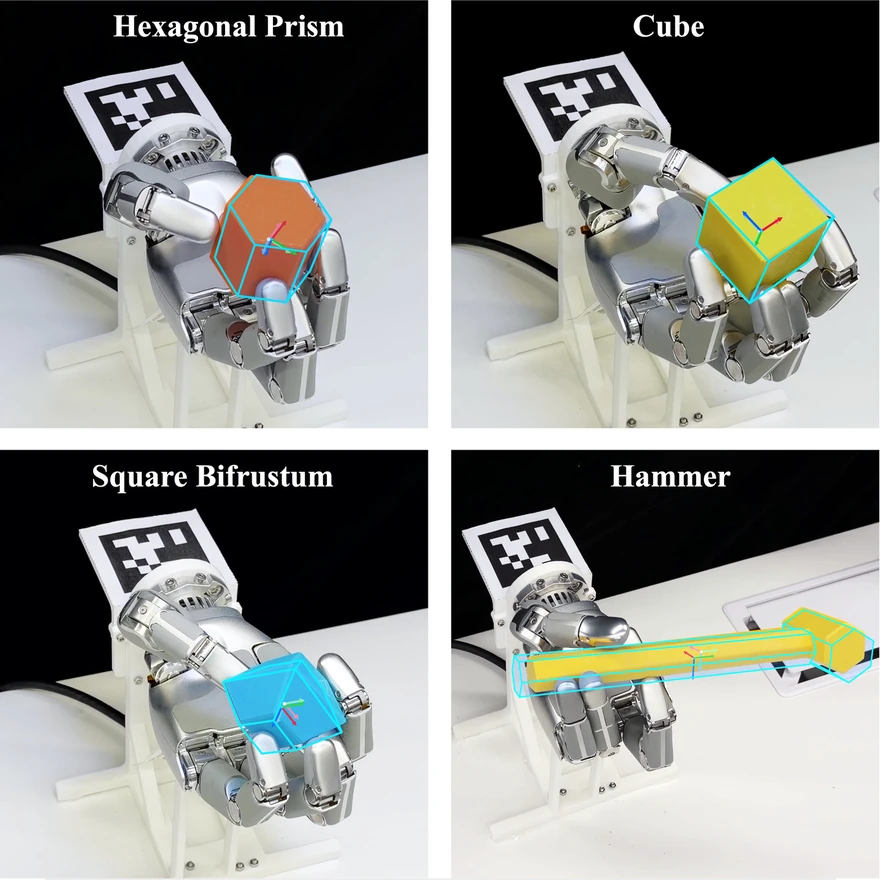
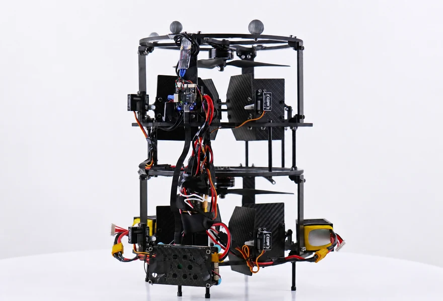
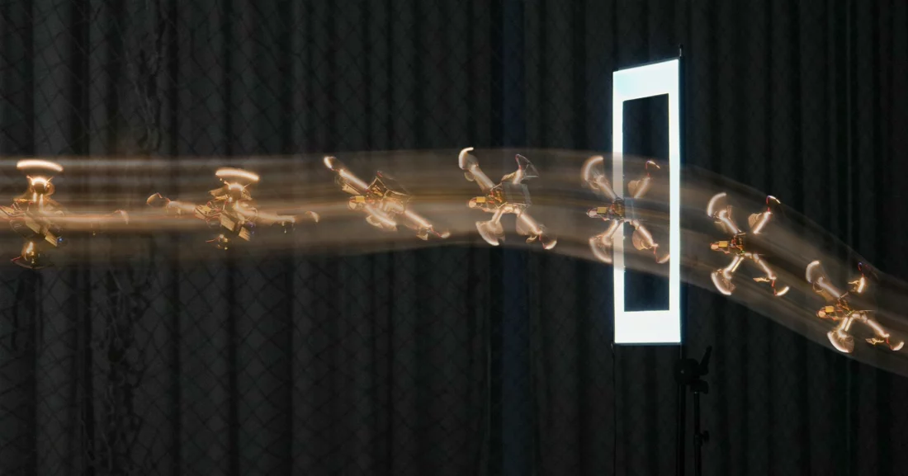
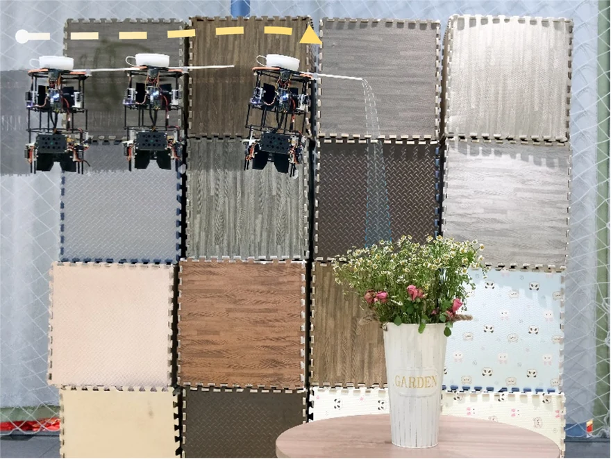
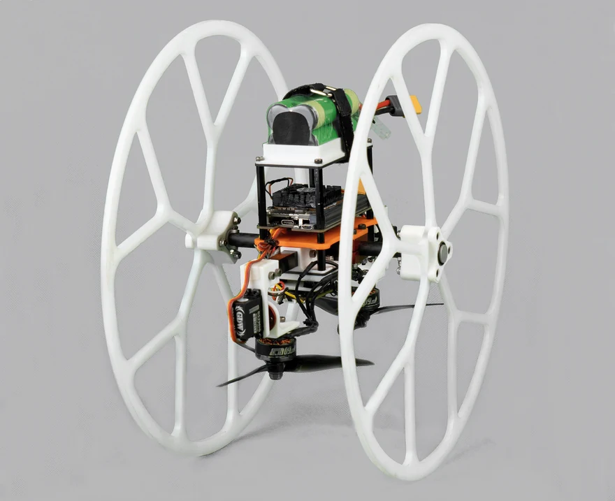
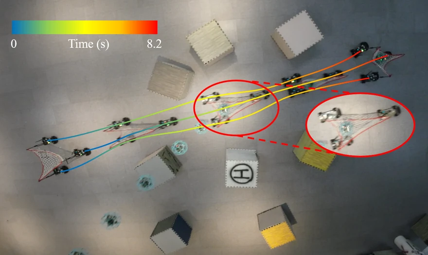
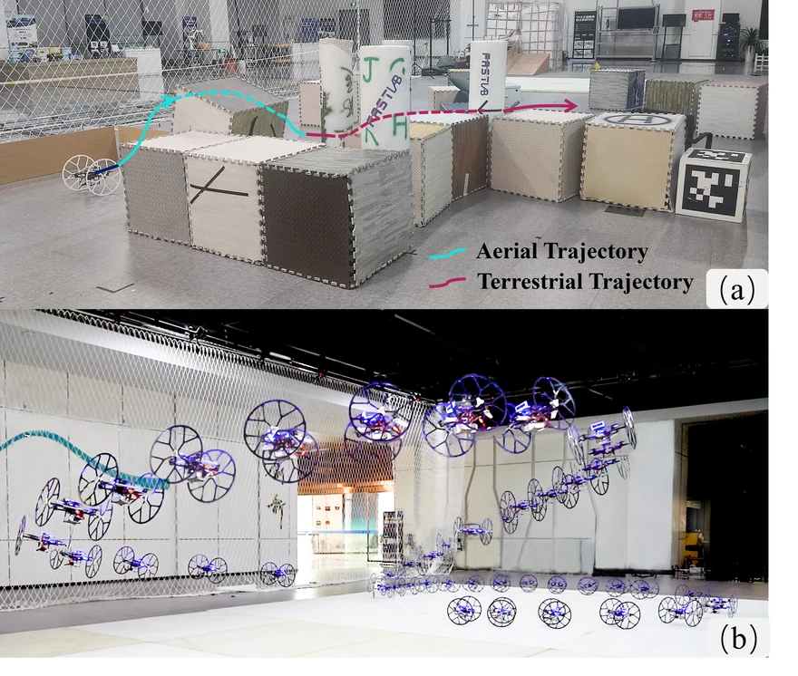

Learning In-Hand Object Reaching to General 6D Poses
Sim-to-real reinforcement learning for in-hand 6D object pose reaching across object geometries and wrist orientations.
I am a Ph.D. student at The University of Hong Kong, advised by Prof. Jia Pan. I received my M.Eng. from Zhejiang University in 2026, advised by Prof. Fei Gao at FAST Lab, and my B.Eng. in Mechanical Engineering from Zhejiang University in 2023. I am currently interning at Sharpa Robotics. Previously, I visited Prof. Weiming Zhi’s research group at the University of Sydney.
My research interests lie in highly dynamic robots and their interaction with physical environments. My work spans aerial robotics, motion planning and control, and dexterous manipulation. I am currently interested in dexterous hand–object interaction.

Sim-to-real reinforcement learning for in-hand 6D object pose reaching across object geometries and wrist orientations.

A compact aerial robot that generates contact forces for close-proximity interaction, with reduced lateral airflow and adaptive control.

Sensorimotor policies turn onboard vision and proprioception into precise, aggressive flight through narrow gaps.

Control surfaces and coaxial propulsion enable fully actuated flight in confined spaces and close to the environment.

A bicopter with passive wheels unifies aerial and ground locomotion, including agile steering on slippery surfaces.

Collaborative trajectory planning enables a team of car-like robots to catch and transport objects with a net in unstructured environments.

Model-based planning and control enable autonomous navigation and hybrid ground–air trajectory tracking for a robot with passive wheels.
* Equal contribution. Preprints are labeled separately from peer-reviewed publications.